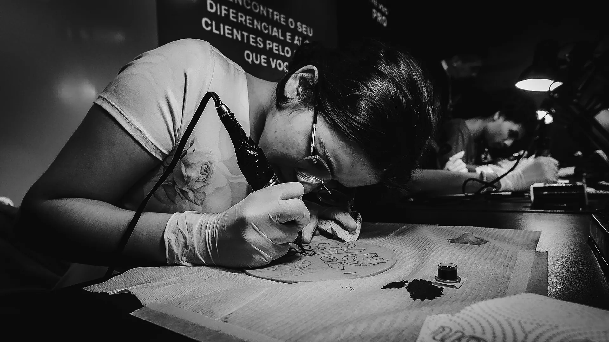
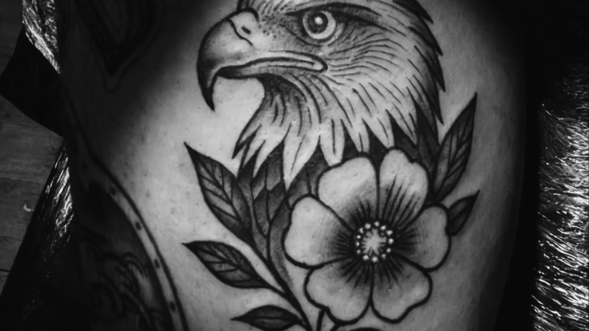
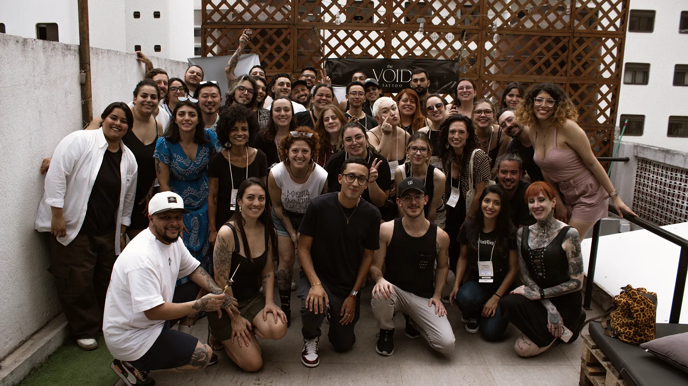
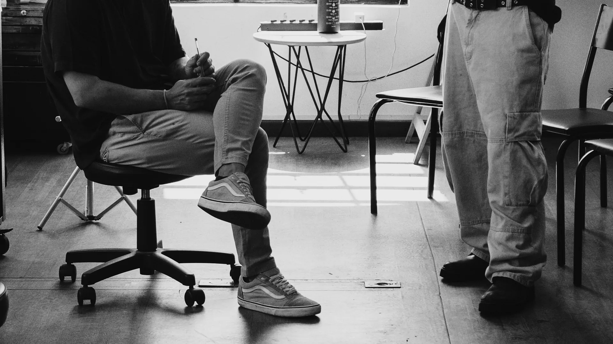

The VOID · Manual de marcaModelo de canal34 VSL
Kit de vídeo de vendas
Tudo o que a VSL (o vídeo de vendas da página) precisa, no tamanho exato: capa, cinco cartelas, legenda queimada com arquivo .srt, lower third (o crédito de quem fala), fecho, roteiro em 9 blocos e checklist. Escolha o produto no alto: cores, textos de partida, duração e rótulo do botão mudam juntos.

The VOID · Kit de VSL01 · Como usar
The VOID Start
Uma luz, um pedido
A VSL é montagem: cena, cartela e documento se revezam, e o fim é sempre um único pedido, igual ao botão sob o player.
Em um minuto
- Escolha o produto no alto. A peça muda de cor, de texto de partida e de rótulo do botão.
- Edite o texto à esquerda de cada peça. A peça é desenhada no tamanho real e só exporta quando passa nas regras (prova com crédito, nada de valor em reais na capa, zero travessão).
- O que ainda depende da escola aparece entre chaves, como
{{A_CONFIRMAR}}, ou com o número da pendência, como [P 15]. Peça com pendência não exporta. - Fotos de banco ou geradas por IA não entram. Onde vai imagem, o kit traz uma foto real do acervo da escola, que você troca por tema ou pela sua, sempre com autorização.
01.1
O fluxo de uma VSL
Do roteiro à publicação, nesta ordem.
1. Roteiro. Defina a duração e leia os 9 blocos (seção 07). Cada bloco diz o que aparece na tela e qual peça deste kit entra.
2. Peças. Gere a capa, as cartelas, o lower third e o fecho. Quem edita o vídeo recebe PNG no tamanho exato e a sequência de quadros do lower third.
3. Legenda. Cole o texto falado na seção 04. O kit quebra em blocos de no máximo duas linhas e baixa o arquivo .srt. A legenda vai queimada no vídeo vertical e em arquivo em todo vídeo público.
4. Publicação. Passe pelo checklist (seção 08) e copie o resumo para quem aprova.
01.2
B-roll do acervo
Planos reais da escola para cobrir a fala. Preto e branco Ritual por padrão; cor Terra só em comunidade e depoimento, no máximo um plano colorido a cada quatro.







Foto: acervo The VOID. Fotos reais da escola, tratadas nos regimes Ritual, Vazio e Terra. Uso autorizado pela The VOID, 10/2026; antes de usar em anúncio pago, confira se a autorização de quem aparece cobre essa finalidade. As mãos são o personagem: toda VSL tem ao menos um plano de mão em ação, com luva e biossegurança visíveis.
Fontes desta seçãoManual de marca da The VOID, seções 06 (leis L1, L6 e L8) e 34 (VSL); relatório de conversão GrowAI para LP e VSL, out/2026.
The VOID · Kit de VSL02 · Capa
The VOID Start
A capa que para o polegar
Painel Sala à esquerda, frase de 3 a 6 palavras com uma palavra em destaque, rosto ou mãos nos dois terços da direita e o canto inferior direito livre para a duração do player.
Em um minuto
- Três tamanhos: 1280 por 720 (player e YouTube), 1080 por 1920 (Stories e Reels) e 1080 por 1350 (feed).
- Marque a palavra de destaque entre asteriscos:
TALENTO É CONSEQUÊNCIA DE *TREINO*. - Nenhum valor em reais na capa: o kit recusa a exportação.
- Com foto real, o kit passa a imagem para o preto e branco Ritual e confere o pixel mais claro sob o título.
- Sem foto real e sem a autorização de imagem marcada, a capa não exporta. Banco de imagem e imagem gerada não entram.
02.1
Montar e exportar
As três prévias são os arquivos. A exportação sai no tamanho exato, sem as guias.
02.2
Assim e assim não
A capa nomeia uma crença e promete o porquê de assistir. Ela nunca promete renda.
Assim
Assim não
Fontes desta seçãoManual de marca da The VOID, seções 34 (capa da VSL), 14 (pares de véu), 22 (Véu de Leitura), 26 (áreas seguras), 29 (preset Ritual e autorização de imagem) e 33 (regras de prova); miniaturas atuais da LP do Start, pasta Nova IDV da The VOID.
The VOID · Kit de VSL03 · Cartelas
The VOID Start
Cinco cartelas
Vazio, Virada, Prova, Oferta e Ação. Todas em Sala com grão e Janela de Luz, até 6 palavras no título e o Marcador de Capítulo; a Oferta é a única tela clara do vídeo.
Em um minuto
- Título de até 6 palavras; a voz em off (o itálico) entra uma vez por tela, dentro do título ou numa linha abaixo.
- A Prova só exporta com a régua completa: o que mede, período, base, fonte e marca de origem. Sem isso, a tela diz "dado em validação" e fica bloqueada.
- A Oferta mostra um item por tela em Modo Leitura. Preço, parcelas e turma dependem da escola [P 15].
- Formato 16:9 para a VSL; 9:16 para os cortes de 15, 30 e 60 segundos.
03.1
A tira das cinco
Escolha uma cartela para editar. O ícone diz se ela já pode ser exportada.
03.2
Cartela Vazio
A crença, nas palavras de quem assiste.
03.3
Na montagem
A cartela não leva foto: ela respira entre duas cenas reais. Cena, cartela, cena: nunca três do mesmo tipo seguidas (L8).

Cena Cartela Vazio 
Cena Cartela Virada 
Cena
Foto: acervo The VOID. As cartelas acompanham o produto escolhido no alto.
Fontes desta seçãoManual de marca da The VOID, seções 22 (Cartela), 24 (Marcador de Capítulo), 25 (Crédito de Prova), 16 (Modo Leitura), 19 (escala de vídeo) e 33 (frases-modelo); crenças das personas: Personas, set/2026, e Brand DNA da The VOID, set/2026; "Tatuar não é desenhar. É uma técnica nova.": site oficial, consultado em 06/10/2026.
The VOID · Kit de VSL04 · Legenda queimada
The VOID Start
Duas linhas, nunca três
Archivo 600 em Tela sobre caixa Sala a 75%, uma palavra de destaque em Areia, base a 110 px da borda no horizontal. O kit calcula a quebra e o arquivo .srt.
Em um minuto
- Horizontal: 50 px, até 42 caracteres por linha. Vertical: 64 px, até 28 caracteres por linha, acima da área da interface.
- Cada bloco tem no máximo duas linhas; frase longa vira outro bloco. A quebra mede a largura real do texto, não só os caracteres.
- Marque uma palavra de destaque por bloco entre asteriscos.
- Tela sobre a caixa dá 7,39:1; Areia sobre a caixa, 4,66:1.
04.1
Texto falado para legenda
Cole a fala. O tempo de cada bloco é estimado a 15 caracteres por segundo; ajuste no editor de vídeo depois de sincronizar.
Fontes desta seçãoManual de marca da The VOID, seções 34 (legenda da VSL), 19 (escala de vídeo), 14 (véu de 75%) e 30 (legenda sempre); texto de exemplo: Brand DNA da The VOID, set/2026 (gancho de Reels e manifesto, com o travessão trocado por vírgula).
The VOID · Kit de VSL05 · Lower third
The VOID Start
Quem fala, sem selo
Fio vertical de 2 px na cor do grafismo que cresce em 8 quadros, nome em Archivo 600 largura 112 com 40 px, função na voz em off com 34 px, de 3 a 4 segundos, a 120 px da lateral e 140 px da base.
Em um minuto
- O selo não entra: a 72 px ele fica abaixo do mínimo de 96 px.
- A prévia é animada em CSS; a exportação sai em quadros PNG transparentes a 24 por segundo, num arquivo ZIP, para qualquer editor.
- Nome e função só de pessoa real, com autorização de nome e imagem [P 13].
- Com movimento reduzido, a prévia aparece direto, sem animação.
05.1
Montar, ver e exportar
A sequência repete a mesma conta da prévia: o que você vê é o que sai.
Foto: acervo The VOID.
Fontes desta seçãoManual de marca da The VOID, seções 30 (lower third), 19 (escala de vídeo), 26 (movimento) e 09 (mínimo do selo); exemplo de função "Aluna do Start, turma de [ano]" da seção 30.
The VOID · Kit de VSL06 · Abertura e fecho
The VOID Start
Abre no gancho, fecha no vazio
Nada de vinheta antes do gancho. Na VSL longa, depois do gancho, 1,2 s de Esfera. No fim, de 1,5 a 2 s de fecho com os Créditos Finais e o zumbido da máquina.
Em um minuto
- Abertura: a Esfera do Vazio surge do escuro em 1.200 ms, só na VSL longa (Start, Master e Pro).
- Fecho institucional: Sala, Eco do VOID, logotipo branco e Créditos Finais.
- Fecho de produto: Campo de Produto com logotipo e selo, sem Eco.
- Assinatura sonora: zumbido curto da máquina gravado na escola, 0,8 s, e silêncio.
06.1
Abertura com a Esfera
A única ilustração da marca. Nunca junto com o Eco do VOID.
Entra logo depois do gancho, nunca antes dele. Duração de 1,2 s com a curva Cena; sem som de vinheta, só o ambiente da sala. Em Reels e anúncio 9:16 não há abertura: o vídeo começa no gancho.
06.2
Fecho
O último quadro antes de a página assumir o pedido.
Fontes desta seçãoManual de marca da The VOID, seções 34 (abertura e fecho da VSL), 21 (Esfera e Eco do VOID), 24 (Créditos Finais), 11 (selos) e 30 (assinatura sonora).
The VOID · Kit de VSL07 · Roteiro em 9 blocos
The VOID Start
Nove blocos, um pedido
Gancho, o vazio, história real autorizada, virada de crença, método, prova, oferta, objeções e o pedido único, falado e escrito. A minutagem se ajusta à duração escolhida.
Em um minuto
- Durações: Start de 12 a 18 min; Master de 8 a 12; Pro de 6 a 10; aula experimental de 60 a 120 s.
- O gancho ocupa os 15 s iniciais e nomeia a crença falsa nos 2 s iniciais. Os outros blocos se dividem na proporção da VSL do Start.
- A cada 90 a 120 s, um respiro: som da máquina, silêncio e uma cartela.
- Planos de 2 a 4 s nos 30 s iniciais; de 4 a 8 s no miolo.
07.1
Duração e linha do tempo
Cena, cartela e documento nunca aparecem três vezes seguidas (L8).
07.2
Os 9 blocos
07.3
Cortes para anúncio em 9:16
Começam no gancho, sem vinheta, sem abertura e sem Créditos Finais (a área da interface cobre o rodapé).
| Corte | O que leva | Regra |
|---|---|---|
| 15 s | Gancho, cartela Virada e o rótulo do botão escrito na tela | Legenda queimada palavra por palavra; planos de 2 a 4 s |
| 30 s | Gancho, o vazio, cartela Virada e o pedido | Mesma promessa da página de destino; nenhum número sem Crédito de Prova |
| 60 s | Gancho, o vazio, trecho da história autorizada, virada e o pedido | Sem antes e depois lado a lado; sem promessa de renda; público de 18 anos ou mais |
Fontes desta seçãoManual de marca da The VOID, seções 34 (roteiro, capítulos e respiro da VSL), 30 (montagem) e 06 (lei L8); estrutura e proporções da VSL do Start: relatório de conversão GrowAI para LP e VSL, out/2026; crenças e objeções: Personas, set/2026, e Brand DNA da The VOID, set/2026.
The VOID · Kit de VSL08 · Checklist de publicação
The VOID Start
Antes de ir ao ar
Marque cada item. O resumo sai pronto para colar na aprovação; as marcas ficam salvas só neste navegador.
Em um minuto
- Item sem marca é item que volta.
- Nenhum número sem prova, nenhuma promessa de renda, nenhum rosto sem autorização para este canal.
- O pedido falado no vídeo é igual ao botão sob o player.
08.1
O que depende da escola
Enquanto estes itens estiverem abertos, as telas que dependem deles não exportam.
[P 15] Números e dados de oferta: alunos formados com método de contagem e data, preços, parcelamento, carga horária, vagas e calendário de turmas. Alimentam as cartelas Prova e Oferta.
[P 22] Acervo de fotografia e vídeo real com autorização de imagem por finalidade. Alimenta a capa, a história e os depoimentos.
[P 13] Quadro de professores e autorização de nome e imagem. Alimenta o lower third.
[P 16] Roteiro e duração da aula experimental. Define a VSL de 60 a 120 s da aula.
[P 3] Licença da Alga para vídeo. Até lá, a voz em off das peças sai em Newsreader Italic 300.
Fontes desta seçãoManual de marca da The VOID, seções 33 (conformidade e prova), 07 (checklist de aprovação), 34 (VSL), 30 (vídeo) e 36 (pendências); checklist de VSL do relatório de conversão GrowAI para LP e VSL, out/2026.